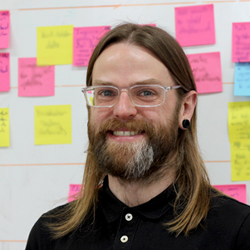
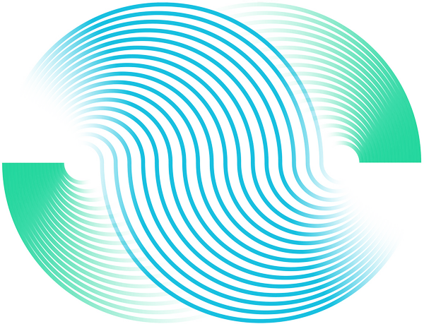
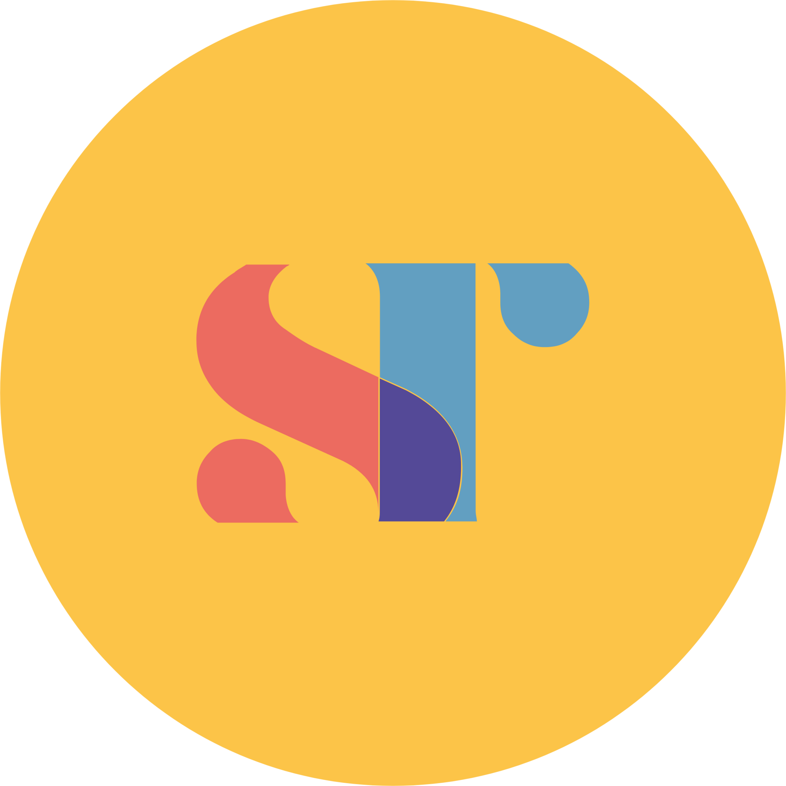
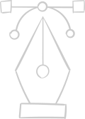
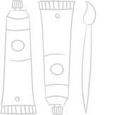

(opens in new tab)Founding team member on an AI-powered memory preservation product, leading engineering and shaping the roadmap alongside the CEO and CXO.

Built and led the design and frontend team, turning climate risk data into accessible dashboards lifting customer satisfaction by 46% and self-service by 22%.

Grew the team from 2 to 6 and rebuilt investment journeys for 2,000+ investors, helping take the fund from zero to £77M with 76% investor retention.

Built user-centred digital products and design systems for UK and international brands, including Selfridges and Which?.
See full list on LinkedIn{% include external-arrow.svg %} (opens in new tab)

Messing with paint, climbing walls, cycling the countryside, fixing bikes, making loud noises on my bass or drums (both badly, but with a smile on my face), or souldering resistors into PCBs.